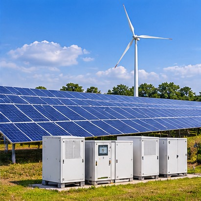

Poor design and site selection
Facilities may be planned where demand, access or land title do not support the intended investment.
We are an engineering consultancy delivering design, regulatory approval and project management solutions for fuel, water and energy infrastructure — with local understanding built into every stage.
Established in 2024 · London & LagosKaotech Design & Consultancy Limited was established in 2024 to bring technical quality, regulatory knowledge and practical project delivery closer together.
The company was incorporated with Nigeria's Corporate Affairs Commission on 16 July 2024 as a private company limited by shares. From the outset, our focus has been on the facilities that underpin energy supply, industrial operations and essential services.
Our work spans concept design, approvals, technical documentation, construction supervision, commissioning and digital integration. We also develop tools that help clients assess opportunities before investment and improve visibility once assets are operating.
Explore our capabilities Engineering judgement at every stage
Engineering judgement at every stageWe see recurring challenges across fuel stations, tank farms and water systems. Our model is designed to deal with those risks before they become expensive problems.
Facilities may be planned where demand, access or land title do not support the intended investment.
Late or fragmented approval processes can introduce rework and delay.
Disconnected procurement and supervision can create gaps in cost, programme and quality.
Manual tank dips and siloed information can limit visibility of asset performance.

International quality, built for local deliveryKaotech applies UK-grade engineering thinking while making room for local fabrication, local content and cost-aware execution.
Engineering depth. Leadership experience across oil and gas, infrastructure and the UK water industry, including control systems, pumping stations, water treatment and SCADA.
Regional understanding. Delivery shaped around Nigerian operating conditions, local suppliers, applicable regulation and the needs of each asset owner.
Cost-conscious design. Modular and prefabricated solutions considered where they can improve programme, quality and scalability.
A focused development path built around infrastructure delivery, site intelligence and digital energy.
Registered in Nigeria as a private company limited by shares.
Operations established across the two locations.
Site viability and regulatory pathway framework introduced.
Digital fuel management platform moved into MVP and pilot programme development.
Experience across fuel, water and energy infrastructure.
Our ambition is grounded in dependable engineering, safer assets and better infrastructure outcomes.
To deliver engineering solutions that elevate the quality, safety and performance of infrastructure across the fuel, water and energy sectors.
To become a leading consultancy for modular fuel stations, tank farms, water treatment systems and energy infrastructure.
To connect technical design, regulatory thinking, project control and digital capability around the needs of each asset.
These values define how we approach engineering, safety, clients, regulators, technology and environmental responsibility.
Decisions backed by evidence, calculation and independent review.
Safety and regulatory alignment are non-negotiable from concept onwards.
Automation and monitoring are incorporated where they deliver real value.
Honest assessments, clear documentation and open communication.
Solutions shaped around each client's site, resources and operating goals.
Protecting soil, groundwater and communities while pursuing efficient systems.
Our value comes from connecting international engineering quality, local delivery insight and digital capability in one disciplined approach.
International engineering thinking combined with regional understanding and cost-optimised execution.
Approval pathways, technical submissions and applicable certification considered early in the project.
SCADA, automation, telemetry and operational monitoring designed into the asset where useful.
More than 40 projects delivered across fuel, water and energy infrastructure.
Site viability and technical readiness assessed before major investment commitments.
Prefabricated and skid-mounted approaches considered for programme and capital efficiency.
We adapt our methodology to the technical, commercial and operational priorities of each client and project environment.
Our project experience and company profile identify particular depth along the Lagos–Ibadan, Abuja–Kaduna–Kano and Port Harcourt–Aba–Onitsha corridors.
Our model is adaptable for wider West African markets, including Ghana, Cameroon and Senegal, as opportunities and partnerships develop.
Talk to our teamSenior engineering leader with more than a decade of experience across the UK and Africa in instrumentation, control and automation.
His background includes critical infrastructure, integrated pumping stations, SCADA for flow control, water quality, modular fuel station deployment, procurement, EPC project management and software implementation leadership on an Enterprise Control System programme for a major UK water utility.
At Kaotech, he leads strategy, client relationships and technical direction, including the FuelSync platform.
Whether the project is at site assessment, design, approvals or delivery stage, we can help establish the right engineering path.